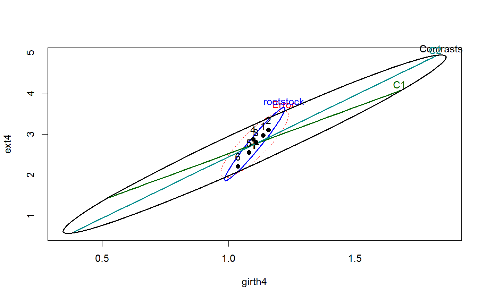
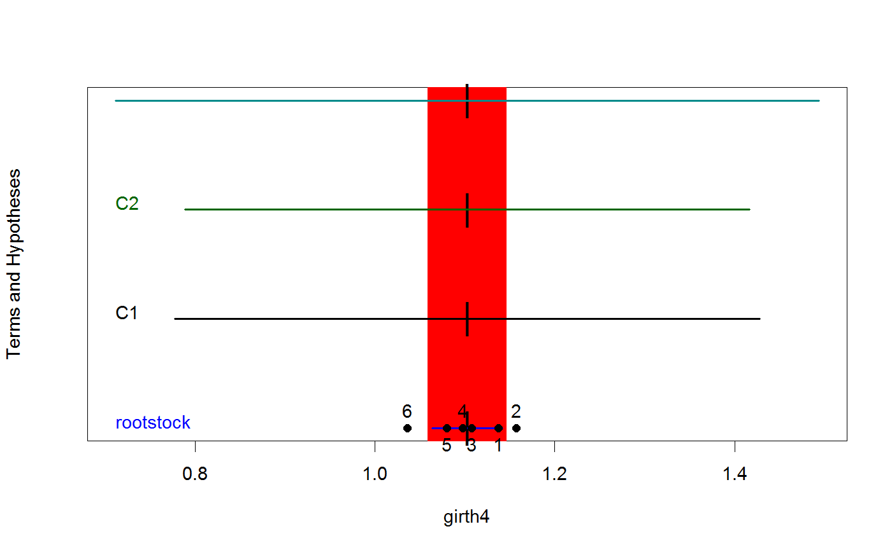

<!-- Generated by pkgdown: do not edit by hand -->
<!DOCTYPE html>
<html>
  <head>
  <meta charset="utf-8">
<meta http-equiv="X-UA-Compatible" content="IE=edge">
<meta name="viewport" content="width=device-width, initial-scale=1.0">

<title>Growth of Apple Trees from Different Root Stocks — RootStock • heplots</title>

<!-- jquery -->
<script src="https://code.jquery.com/jquery-3.1.0.min.js" integrity="sha384-nrOSfDHtoPMzJHjVTdCopGqIqeYETSXhZDFyniQ8ZHcVy08QesyHcnOUpMpqnmWq" crossorigin="anonymous"></script>
<!-- Bootstrap -->
<link href="https://maxcdn.bootstrapcdn.com/bootswatch/3.3.7/cerulean/bootstrap.min.css" rel="stylesheet" crossorigin="anonymous">

<script src="https://maxcdn.bootstrapcdn.com/bootstrap/3.3.7/js/bootstrap.min.js" integrity="sha384-Tc5IQib027qvyjSMfHjOMaLkfuWVxZxUPnCJA7l2mCWNIpG9mGCD8wGNIcPD7Txa" crossorigin="anonymous"></script>

<!-- Font Awesome icons -->
<link href="https://maxcdn.bootstrapcdn.com/font-awesome/4.6.3/css/font-awesome.min.css" rel="stylesheet" integrity="sha384-T8Gy5hrqNKT+hzMclPo118YTQO6cYprQmhrYwIiQ/3axmI1hQomh7Ud2hPOy8SP1" crossorigin="anonymous">


<!-- pkgdown -->
<link href="../pkgdown.css" rel="stylesheet">
<script src="../jquery.sticky-kit.min.js"></script>
<script src="../pkgdown.js"></script>
  
  
<!-- mathjax -->
<script src='https://mathjax.rstudio.com/latest/MathJax.js?config=TeX-AMS-MML_HTMLorMML'></script>

<!--[if lt IE 9]>
<script src="https://oss.maxcdn.com/html5shiv/3.7.3/html5shiv.min.js"></script>
<script src="https://oss.maxcdn.com/respond/1.4.2/respond.min.js"></script>
<![endif]-->


  </head>

  <body>
    <div class="container template-reference-topic">
      <header>
      <div class="navbar navbar-default navbar-fixed-top" role="navigation">
  <div class="container">
    <div class="navbar-header">
      <button type="button" class="navbar-toggle collapsed" data-toggle="collapse" data-target="#navbar">
        <span class="icon-bar"></span>
        <span class="icon-bar"></span>
        <span class="icon-bar"></span>
      </button>
      <a class="navbar-brand" href="../index.html">heplots</a>
    </div>
    <div id="navbar" class="navbar-collapse collapse">
      <ul class="nav navbar-nav">
        <li>
  <a href="../index.html">
    <span class="fa fa-home fa-lg"></span>
     
  </a>
</li>
<li>
  <a href="../reference/index.html">Reference</a>
</li>
      </ul>
      
      <ul class="nav navbar-nav navbar-right">
        
      </ul>
    </div><!--/.nav-collapse -->
  </div><!--/.container -->
</div><!--/.navbar -->

      
      </header>

      <div class="row">
  <div class="col-md-9 contents">
    <div class="page-header">
    <h1>Growth of Apple Trees from Different Root Stocks</h1>
    </div>

    
    <p>In a classic experiment carried out from 1918 to 1934, growth
of apple trees of six different rootstocks were compared on 
four measures of size.</p>
    

    <pre class="usage"><span class='fu'>data</span>(<span class='no'>RootStock</span>)</pre>
        
    <h2 class="hasAnchor" id="format"><a class="anchor" href="#format"></a>Format</h2>

    <p>A data frame with 48 observations on the following 5 variables.</p><dl class='dl-horizontal'>
    <dt><code>rootstock</code></dt><dd><p>a factor with levels <code>1</code> <code>2</code> <code>3</code> <code>4</code> <code>5</code> <code>6</code></p></dd>
    <dt><code>girth4</code></dt><dd><p>a numeric vector: trunk girth at 4 years (mm x 100)</p></dd>
    <dt><code>ext4</code></dt><dd><p>a numeric vector: extension growth at 4 years (m)</p></dd>
    <dt><code>girth15</code></dt><dd><p>a numeric vector: trunk girth at 15 years (mm x 100)</p></dd>
    <dt><code>weight15</code></dt><dd><p>a numeric vector: weight of tree above ground at 15 years (lb x 1000)</p></dd>
  </dl>
    
    <h2 class="hasAnchor" id="details"><a class="anchor" href="#details"></a>Details</h2>

    <p>This is a balanced, one-way MANOVA design, with n=8 trees for each rootstock.</p>
    
    <h2 class="hasAnchor" id="source"><a class="anchor" href="#source"></a>Source</h2>

    <p>Andrews, D. and Herzberg, A. (1985). <em>Data: A Collection of Problems from Many Fields for the Student and Research Worker</em>
Springer-Verlag,
pp. 357--360.</p>
    
    <h2 class="hasAnchor" id="references"><a class="anchor" href="#references"></a>References</h2>

    <p>Rencher, A. C. (1995). <em>Methods of Multivariate Analysis</em>.
New York: Wiley, Table 6.2</p>
    

    <h2 class="hasAnchor" id="examples"><a class="anchor" href="#examples"></a>Examples</h2>
    <pre class="examples"><div class='input'><span class='fu'>data</span>(<span class='no'>RootStock</span>)
<span class='co'>## maybe str(RootStock) ; plot(RootStock) ...</span>
<span class='no'>root.mod</span> <span class='kw'>&lt;-</span> <span class='fu'>lm</span>(<span class='fu'>cbind</span>(<span class='no'>girth4</span>, <span class='no'>ext4</span>, <span class='no'>girth15</span>, <span class='no'>weight15</span>) ~ <span class='no'>rootstock</span>, <span class='kw'>data</span><span class='kw'>=</span><span class='no'>RootStock</span>)
<span class='fu'>Anova</span>(<span class='no'>root.mod</span>)</div><div class='output co'>#&gt; 
#&gt; Type II MANOVA Tests: Pillai test statistic
#&gt;           Df test stat approx F num Df den Df    Pr(&gt;F)    
#&gt; rootstock  5    1.3055   4.0697     20    168 1.983e-07 ***
#&gt; ---
#&gt; Signif. codes:  0 <U+0091>***<U+0092> 0.001 <U+0091>**<U+0092> 0.01 <U+0091>*<U+0092> 0.05 <U+0091>.<U+0092> 0.1 <U+0091> <U+0092> 1</div><div class='input'>
<span class='fu'>pairs</span>(<span class='no'>root.mod</span>)</div><div class='img'></div><div class='input'>
<span class='co'># test two orthogonal contrasts among the rootstocks</span>
<span class='no'>hyp</span> <span class='kw'>&lt;-</span> <span class='fu'>matrix</span>(<span class='fu'>c</span>(<span class='fl'>2</span>,-<span class='fl'>1</span>,-<span class='fl'>1</span>,-<span class='fl'>1</span>,-<span class='fl'>1</span>,<span class='fl'>2</span>,  <span class='fl'>1</span>, <span class='fl'>0</span>,<span class='fl'>0</span>,<span class='fl'>0</span>,<span class='fl'>0</span>,-<span class='fl'>1</span>), <span class='fl'>2</span>, <span class='fl'>6</span>, <span class='kw'>byrow</span><span class='kw'>=</span><span class='fl'>TRUE</span>)
<span class='fu'>linearHypothesis</span>(<span class='no'>root.mod</span>, <span class='no'>hyp</span>)</div><div class='output co'>#&gt; 
#&gt; Sum of squares and products for the hypothesis:
#&gt;            girth4      ext4   girth15 weight15
#&gt; girth4   2.684223  7.573365  7.792122 1.617892
#&gt; ext4     7.573365 22.489458 23.293194 5.760003
#&gt; girth15  7.792122 23.293194 24.145778 6.090615
#&gt; weight15 1.617892  5.760003  6.090615 2.248755
#&gt; 
#&gt; Sum of squares and products for error:
#&gt;             girth4      ext4   girth15 weight15
#&gt; girth4   0.3199875  1.696564 0.5540875 0.217140
#&gt; ext4     1.6965637 12.142790 4.3636125 2.110214
#&gt; girth15  0.5540875  4.363612 4.2908125 2.481656
#&gt; weight15 0.2171400  2.110214 2.4816562 1.722525
#&gt; 
#&gt; Multivariate Tests: 
#&gt;                  Df test stat  approx F num Df den Df     Pr(&gt;F)    
#&gt; Pillai            2  1.426293  24.86102      8     80 &lt; 2.22e-16 ***
#&gt; Wilks             2  0.020401  58.51245      8     78 &lt; 2.22e-16 ***
#&gt; Hotelling-Lawley  2 26.121884 124.07895      8     76 &lt; 2.22e-16 ***
#&gt; Roy               2 25.254884 252.54884      4     40 &lt; 2.22e-16 ***
#&gt; ---
#&gt; Signif. codes:  0 <U+0091>***<U+0092> 0.001 <U+0091>**<U+0092> 0.01 <U+0091>*<U+0092> 0.05 <U+0091>.<U+0092> 0.1 <U+0091> <U+0092> 1</div><div class='input'><span class='fu'><a href='heplot.html'>heplot</a></span>(<span class='no'>root.mod</span>, <span class='kw'>hypotheses</span><span class='kw'>=</span><span class='fu'>list</span>(<span class='kw'>Contrasts</span><span class='kw'>=</span><span class='no'>hyp</span>, <span class='kw'>C1</span><span class='kw'>=</span><span class='no'>hyp</span>[<span class='fl'>1</span>,], <span class='kw'>C2</span><span class='kw'>=</span><span class='no'>hyp</span>[<span class='fl'>2</span>,]))</div><div class='img'></div><div class='input'>
<span class='fu'><a href='heplot1d.html'>heplot1d</a></span>(<span class='no'>root.mod</span>, <span class='kw'>hypotheses</span><span class='kw'>=</span><span class='fu'>list</span>(<span class='kw'>Contrasts</span><span class='kw'>=</span><span class='no'>hyp</span>, <span class='kw'>C1</span><span class='kw'>=</span><span class='no'>hyp</span>[<span class='fl'>1</span>,], <span class='kw'>C2</span><span class='kw'>=</span><span class='no'>hyp</span>[<span class='fl'>2</span>,]))</div><div class='img'></div><div class='input'>
</div></pre>
  </div>
  <div class="col-md-3 hidden-xs hidden-sm" id="sidebar">
    <h2>Contents</h2>
    <ul class="nav nav-pills nav-stacked">
      
      <li><a href="#format">Format</a></li>

      <li><a href="#details">Details</a></li>

      <li><a href="#source">Source</a></li>

      <li><a href="#references">References</a></li>
      
      <li><a href="#examples">Examples</a></li>
    </ul>

  </div>
</div>

      <footer>
      <div class="copyright">
  <p>Developed by John Fox, Michael Friendly.</p>
</div>

<div class="pkgdown">
  <p>Site built with <a href="http://hadley.github.io/pkgdown/">pkgdown</a>.</p>
</div>

      </footer>
   </div>

  </body>
</html>
